컨텐츠영역
이용안내
- 01도로표지
-
※ 화살표 방향으로만 진출 가능합니다.
-
정지선 주로 홋카이도에 많습니다.
눈이 오면 도로 위에 눈이 쌓여서 정지선이 잘 보이지 않으니
유의하시기 바랍니다. -
버스전용 버스전용 차로가 실시되는 시간대에는 버스이외의 차량은 통행할 수 없습니다.
-
버스우선 버스우선 차로가 실시되는 시간대에는 버스 이외의 차량은 뒤에서 버스가 오면 다른 차선으로 변경해서 양보해야 합니다.
-
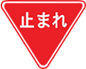
일시정지 해당 표지판이 나올 경우 반드시 일시정지하고 다시 출발해야합니다.
(경찰들이 숨어서 단속/ 일본은 함정단속이 불법이 아님) ※ 주요위치
철도건널목, 우선도로로 진입하는 구간, 시야가 확보되지 않는 골목길
-
- 02신호체계
-
일본은 우리나라와 달리 유럽식 신호체계를 사용합니다. 유럽식 신호체계에서는 적색신호에서는 어느 방향으로도 진행할 수 없습니다. (우리나라 같은 경우, 적색신호여도 우회전 가능)
직접 운전하면서 자연스럽게 익숙해지는게 좋지만, 신호체계가 어떤 식으로 진행되는지 미리 알아가는 것도 좋을 것 같습니다.
크게 두 가지만 기억하시면 됩니다.- ① 녹색 신호에서는 모든 방향으로 진행할 수 있다. (단, 직진 신호를 제외한 나머지 신호는 비보호)
- ② 적색 신호에서는 어떤 방향으로도 진행할 수 없다.
- ③ 적색 신호 더라도 녹색 화살표가 켜져 있다면 그 방향으로는 진행 가능하다. (보호)
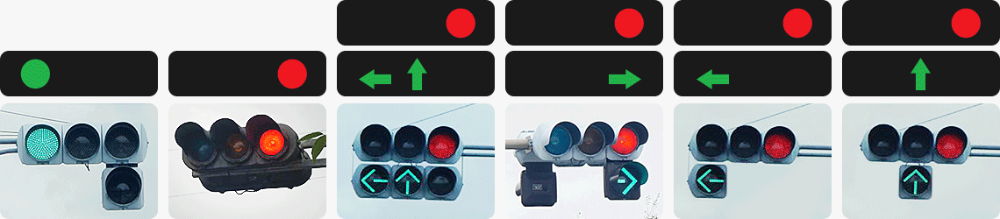- 모든 방향 진행 가능
(단, 직진 외 비보호) - 모든 방향 진행 불가
- 직진/좌회전(보호) 가능
우회전/유턴 불가 - 우회전(보호)/유턴 가능
- 좌회전(보호) 가능
그 외/유턴 불가 - 직진(보호) 가능
그 외/유턴 불가
- 03중앙선 횡단
-
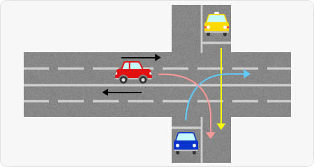
그림이 이해 되시나요? 교차로가 아닌 중앙선을 그냥 뚫고 지나가는 겁니다.
일본 도로에서도 사실 중앙선을 넘어서 우회전 하는 일은 별로 없습니다만, 택시처럼 횡단하는 방법은 꽤 많습니다.
바로 앞이 중앙선인데 내비게이션이 직진으로 안내한다고 해서 당황하지 마세요! - 04주유하기
-
-
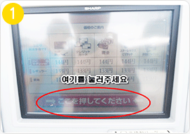
일본은 대부분이 셀프 주유소입니다.
우리나라와 이용하는 방법은 비슷합니다. -
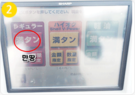
반납을 할 때 가득 채워서 반납해야
되기 때문에 만땅을 선택해주시면 됩니다. -
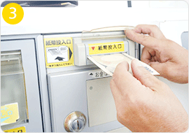
지폐투입구에 주유할 만큼의 금액을
넣어 주세요. -
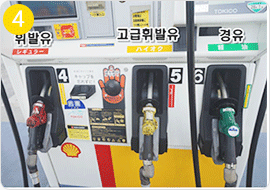
빨간색 휘발유 주유기를
사용하시면 됩니다. -
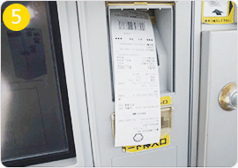
주유가 끝나면 영수증이 나오는데 잔돈이 바로
나오는 기계가 있고, 그렇지 않은 기계도 있습니다. -
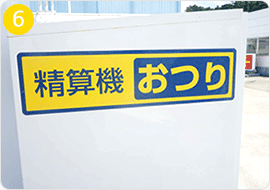
잔돈이 바로 나오지 않는 기계일 경우,
바로 옆에 오쯔리(잔돈) 기계가 있습니다. -
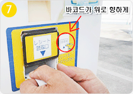
오쯔리 기계의 투입구에 바코드를 위로 향하게
영수증을 넣으면 잔돈이 나옵니다. - 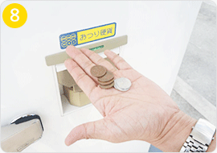 잔돈 수령까지 완료!
-
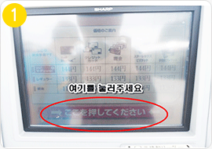
일본은 대부분이 셀프 주유소입니다.
- 05과속규정과 벌금
-
일본은 운전 법규가 엄격하며, 내비게이션에 단속 카메라가 잡히지 않습니다.
우리나라처럼 조금만 가도 단속 카메라가 잡힐 정도로 많이 있지는 않지만, 한번 걸리면 요금이 상당히 부과되기 때문에 주의하셔야 합니다.속도위반 벌금 기타항목 벌금 15km 초과 9,000엔 핸드폰사용 9,000엔 15km ~ 20km 초과 12,000엔 음주 0.15mg ~ 0.25mg 300,000엔 이하의 벌금 / 1년 이하의 징역 20km ~ 25km 초과 15,000엔 0.25mg이상 500,000엔 이하의 벌금 / 3년 이하의 징역 25km ~ 30km 초과 18,000엔 불법주차 주차위반 15,000엔 30km 초과 법정행 주정차위반 18,000엔